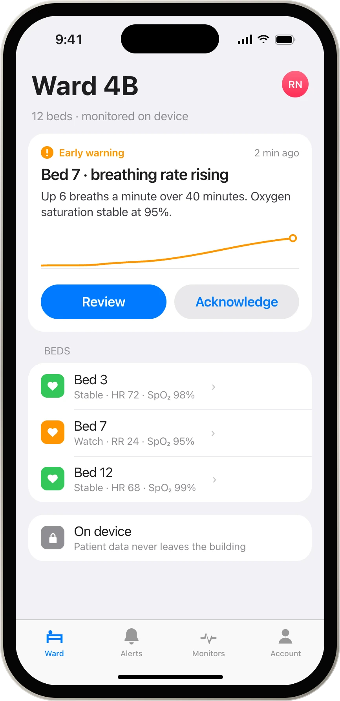
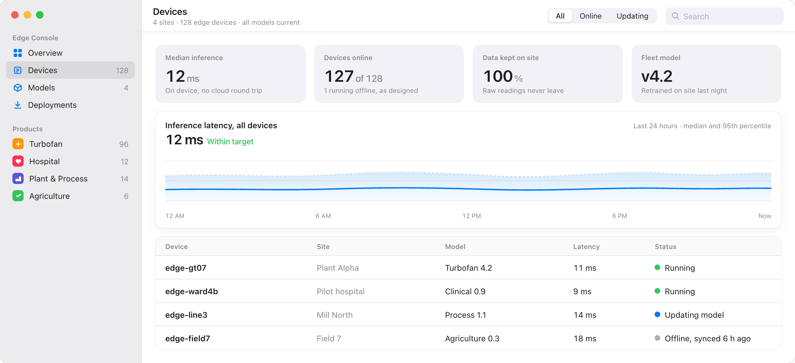
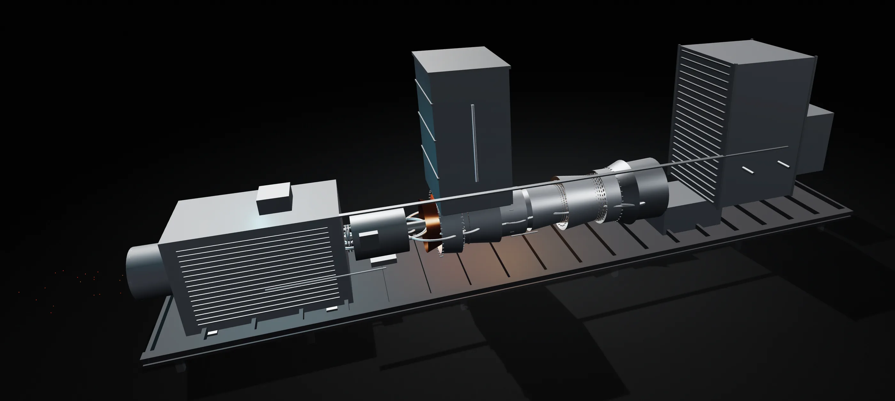
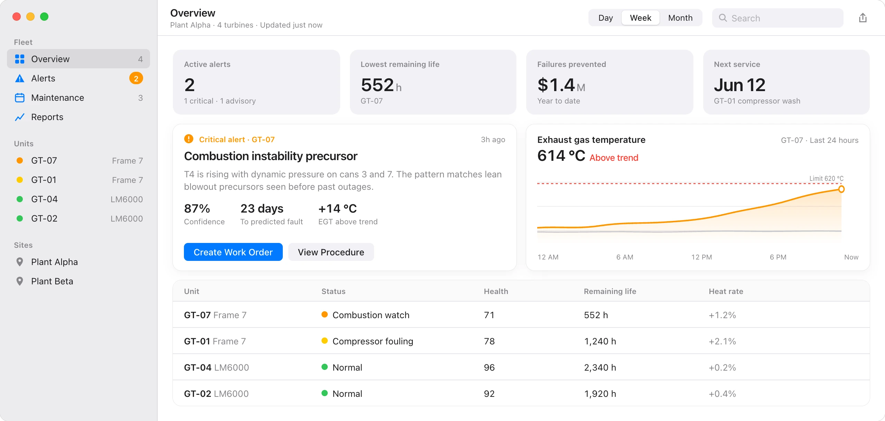
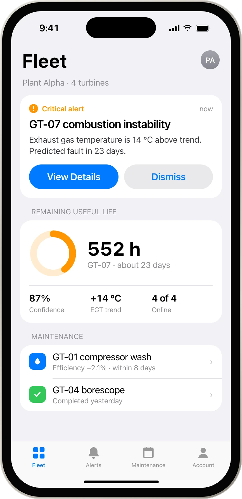
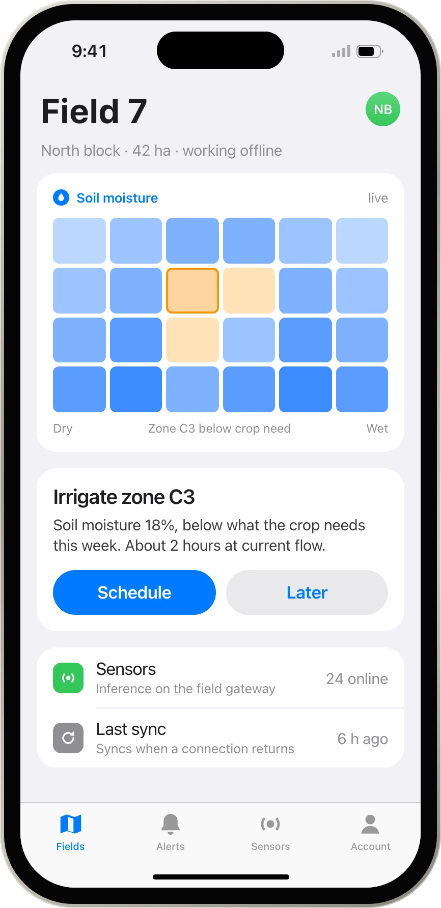
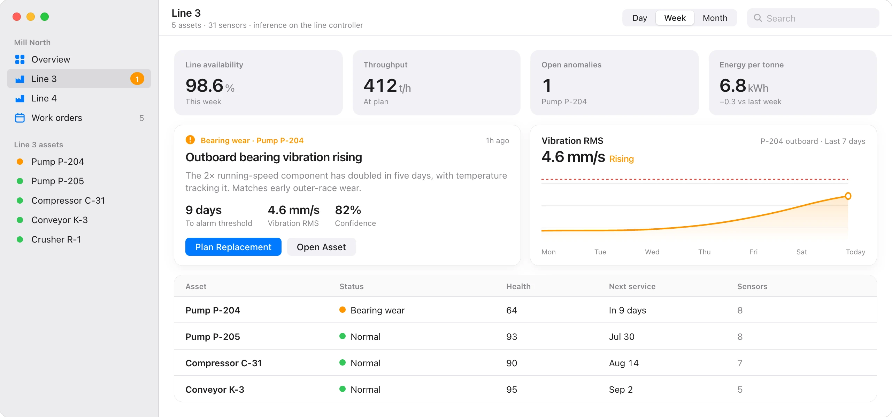

In development
Hospital Intelligence
Early warning at the bedside.

Turbnetic
AI that runs next to the machine, not in someone else's cloud.

Now live
Stop turbine failures before they start.
Scroll to go inside the turbine

Inlet silencer, gas turbine and alternator on one skid.
Turbofan Intelligence models the machine stage by stage.
Fouling shows up as lost efficiency, weeks before it costs you heat rate.
Dynamic pressure and exhaust temperature flag instability before it becomes a trip.
Rotor, blades, fuel and oil lines, each watched by the sensors mapped to it.
Running on site, right next to it.
Turbofan Intelligence for Mac and iPhone. Alerts, remaining life and the maintenance plan, wherever your team is.


In development
Early warning at the bedside.

Exploring
Field decisions, no connection needed.

In development
Find the failing bearing before the line stops.

Next
We adapt the foundation anywhere sensor data outpaces the people reading it.
Predictions right at the machine. No cloud round trip, no downtime when the link drops.
Smaller models through INT8 quantization and pruning, so they run on low-power edge NPUs without losing accuracy.
Channels fused into one health state.
Independent of the network.
Auto-model selection
Picks and tunes the right model for each machine's signature. No data-science team required.
Federated retraining
Models retrain nightly on site. Raw data never leaves.
Runs on ARM, x86 and NPU accelerators. Installs in hours.
Connects to what you already run:
Tell us about your assets and data. We'll show you what a purpose-built edge-AI product looks like for your operation.